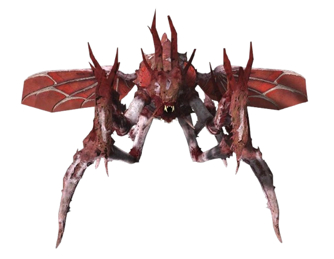
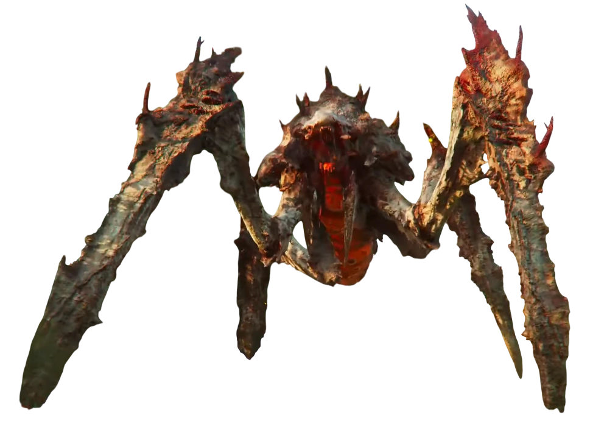

The Spore Strain
Header — What introductory content does this element contain in your project?
Explanation: The header contains the h1 tag, the logo, and any introduction content.
What They Bring to The Table
The spore burst strain add fast and explosive bugs that specialize in getting in your face.
Killing one bug releases spores that increase the speed of any other bug that enters that section.
The clouds also inflict a small damage over time effect when caught in the explosion.
Section — What makes this a distinct group of related content?
Explanation: This section splits the content into its own section with a heading and information.
Main — What makes this the primary content of your page?
Explanation: This contains the main information the website wants to provide.

Spore Burst Hunter
 Spore Burst Warrior
Spore Burst Warrior

Spore Burst Titan
Figcaption — What does the caption explain about its figure?
The caption explains what the figure is and sometimes its location
Figure — Why are this visual and its caption grouped together?
Visual and caption are grouped together in order to keep information about the picture in the same relevent section
Article — Why is this content suitable for an article instead of just an ordinary section?
Example: Content is suitable for articles when the information is more based on a side story.
SPORE
!Spore Burst bugs are not the most common but can be a big problem along with a large overwhelming problem!
Details — What happens when a visitor opens or closes this element?
Explanation: When closing or opening a detail it condenses or expands extra information
Summary — What role does this element play inside details?
Explanation: Summary adds a specified heading for the detail